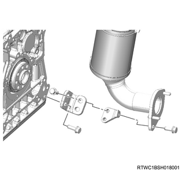
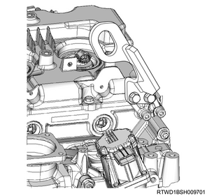

Engine assembly removal (4JJ1)
1. Battery ground cable disconnect
1. Open the engine hood assembly.
2. Disconnect the battery ground cable from the battery.
Caution
- Do not disconnect within 1 minute after turning OFF the ignition switch.
3. Raise vehicle using the jack.
2. Underguard removal
Note
- The following applies to models with an under air deflector.
1. Remove the under air deflector from the frame.
Note
- Remove the 5 bolts and clip.

- Bolt
- Clip
Note
- The following applies to models with front and rear underguard.
2. Remove the front underguard from the frame.
Note
- Remove the 5 bolts.
3. Remove the rear underguard from the frame.
Note
- Remove the 4 bolts.

- Front underguard
- Rear underguard
- Bolt
Note
- The following applies to models with front and rear underguard and an oil pan guard.
4. Remove the front underguard from the frame.
Note
- Remove the 5 bolts.
5. Remove the oil pan guard from the frame.
Note
- Remove the 4 bolts.
6. Remove the rear underguard from the frame.
Note
- Remove the 4 bolts.

- Front underguard
- Oil pan guard
- Bolt oil pan guard
- Bolt
- Rear underguard
3. Coolant drain
1. Drain coolant from the radiator.
Note
- Open the drain plug at the bottom of the radiator.

2. Remove the radiator cap from the radiator.
Warning
- In order to prevent burns, do not open the cap when the engine and radiator are hot.
- Heat liquid and steam may gush out by pressure.
4. Engine hood assembly removal
1. Open the engine hood.
Note
- Support the engine hood.
- Disconnect the tube from the washer nozzle.
2. Remove the hinge bolt from the engine hood.
3. Remove the engine hood from the hinge.
Note
- Before removing the hinge from the engine hood, put a marking of the hinge location for putting the hinge back in place.

5. Engine cover removal
1. Remove the engine cover from the engine.

- Engine cover
6. Wiper arm cover removal
1. Remove the wiper arm cover from the wiper arm.
7. Wiper arm removal
1. Remove the wiper arm from vehicle.
Note
- Remove the nut to remove the wiper arm and the blade.

- Wiper arm cover
- Nut
- Wiper arm, blade
8. Side cowl cover removal
1. Remove the side cowl cover from the body.

- Side cowl cover
9. Cowl cover removal
1. Disconnect the washer hose from the clip.
2. Remove the grommet from the cowl panel.
Note
- Push the grommet down inside the cowl panel.

- Grommet
- Washer hose
3. Remove the cowl cover from the cowl panel.
10. Wiper linkage disconnect
1. Disconnect the wiper linkage from vehicle.
Note
- Remove the bolt and nut from the wiper linkage.
- Remove the connector from the wiper motor.

- Nut
- Bolt
11. Cowl panel removal
1. Remove the cowl panel from vehicle.
Note
- Remove the 8 bolts.

12. Intake air duct removal
1. Remove the intake air duct from the turbocharger and the intercooler.
Note
- Remove the part together with the intake hose.

13. Blow-by hose disconnect
1. Disconnect the blow-by hose from the cylinder head cover.
14. Air cleaner assembly removal
1. Disconnect the harness connector from the MAF sensor.
2. Disconnect the harness connector from the barometric pressure sensor.
3. Disconnect the vacuum hose from the air cleaner assembly.
4. Disconnect the intake pipe from the turbocharger assembly.
5. Remove the air cleaner assembly from vehicle.

- Air cleaner assembly
- MAF sensor
- Vacuum hose
- Blow-by hose
- Intake pipe
- Barometric pressure sensor
15. Boost pressure sensor disconnect
1. Disconnect the connector from the boost pressure sensor.

16. Intake air duct removal
1. Remove the intake air duct from the intake throttle valve and the intercooler.
Note
- Remove the part together with the intake hose.

17. Heater hose disconnect
1. Disconnect the heater hose from the heater pipe.
Note
- Disconnect the 2 heater hoses together.

- Heater hose
18. Battery removal
1. Disconnect the battery ground cable from the frame.
2. Disconnect the battery cable from the battery.
3. Remove the battery bracket from the frame.
4. Remove the battery from vehicle.

- Battery cable
- Battery bracket
- Earth
19. Fuse box disconnect
1. Remove the fuse box cover from the fuse box.
2. Disconnect the engine harness from the fuse box.
3. Disconnect the battery harness from the fuse box.
20. Radiator upper hose removal
1. Remove the radiator upper hose from the water outlet pipe and the radiator.

- Radiator upper hose
21. Radiator reserve tank removal
1. Disconnect the radiator reserve tank hose from the radiator.
2. Remove the radiator reserve tank from the upper fan guide.

22. A/C compressor drive belt removal
1. Remove the A/C compressor drive belt from the pulley.

- A/C compressor drive belt
23. A/C compressor assembly disconnect
1. Remove the A/C compressor assembly from the A/C compressor bracket.

- A/C compressor bracket
- A/C compressor
24. Fan guide removal
1. Remove the fan guide from the radiator.
Note
- Remove the clips and bottom locks on both sides and remove the upper fan guide.

- Upper fan guide
- Clip
- Lower fan guide
- Fan shroud
25. Cooling fan belt removal
1. Loosen the adjust bolt using a wrench.
Note
- Loosen the idle pulley tension adjust bolt.
2. Remove the cooling fan belt from the pulley.
26. Cooling fan removal
1. Remove the cooling fan from the fan clutch assembly.

- Fan clutch assembly
- Cooling fan
27. Fan shroud removal
1. Remove the fan guide from the radiator.
Note
- Remove the lower fan guide together with the fan shroud.
28. Glove box removal
1. Remove the glove box from the instrument panel.

- Glove box
- Instrument panel assist side lower cover
29. Instrument panel assist-side lower cover removal
1. Remove the instrument panel assist-side lower cover from the instrument panel.
Note
- Remove the 4 screws.

30. ECM disconnect
1. Disconnect the harness connector from the ECM.
Note
- Pull out the harness to the engine room side.
2. Disconnect the harness from the frame.
31. Vacuum hose disconnect
1. Disconnect the vacuum hose from the vacuum pipe.
2. Remove the harness bracket from the inlet manifold and the common rail (fuel rail) bracket.
32. Fuel hose disconnect
1. Disconnect the fuel hose from the fuel supply pump.
2. Disconnect the fuel hose from the fuel leak-off pipe.
Caution
- Cover the exposed portion to prevent foreign material from getting into the fuel system.

- Fuel hose
33. Catalyst converter removal
1. Disconnect the catalyst converter from the front exhaust pipe.
2. Disconnect the catalyst converter from the catalyst converter bracket.
3. Remove the catalyst converter from the turbocharger assembly.

4. Remove the catalyst converter bracket from the rear cover.
Note
- Remove the exhaust side from the engine side.
- Remove the engine side from the crankcase.

34. Power steering oil pump assembly removal
1. Remove the power steering oil pump from the timing gear case.
Note
- Remove the power steering pump together with the hose.

- Power steering oil pump
- Nut
2. Remove the power steering oil hose from the bracket.

- Bracket
35. Radiator lower hose disconnect
1. Disconnect the radiator lower hose from the water intake pipe.

- Radiator lower hose
36. Transmission oil level gauge tube removal
1. Remove transmission oil level gauge tube from the oil pan.
37. Oil level gauge guide tube removal
1. Remove the oil level gauge from the oil level gauge guide tube.
2. Remove the oil level gauge guide tube from the crankcase.
38. Starter motor removal
1. Disconnect the earth cable from the starter motor.
2. Remove the starter motor from the rear plate.
39. Transmission removal
40. Engine mounting disconnect
1. Install the front engine hanger to the cylinder head.

SST: 5-8840-2999-0 - front engine hanger

- Front engine hanger
- M10 × 1.5 × 25 mm
- M10 × 1.5 × 25 mm
2. Install the rear engine hanger to the cylinder head.

SST: 5-8840-2886-0 - rear engine hanger

Tightening torque： 25 N・m { 2.5 kgf・m / 18 lb・ft }
3. Install the wire to the engine hanger and the hoist.
Note
- Keep the engine suspended but not lifted up.
4. Disconnect the engine mounting from the frame.
41. Engine assembly removal
1. Remove the engine assembly from vehicle.